|

|

|

|

|

|

|

|

|

|

|

|

|
|
||
|
meine private, nicht Kommerzielle Webseite befasst sich mit meinen Hobbys . Ich bin Rentner und über 70 Jahre alt...
Im Sinne von Paragraphen 7 Absatz 1 TMG bin ich für die eigenen Inhalte auf dieser Webseite verantwortlich. Durch Paragraphen 8 einschließlich 10 TMG bin ich aber nicht verpflichtet, gespeicherte oder übermittelte fremde Inhalte zu überwachen oder diese auf Rechtswidrigkeit zu prüfen. Das befreit mich nicht von der Pflicht, der Sperrung oder Entfernung von Informationen nach geltenden Gesetzen nachzukommen..
Gernot Schaly
Für die auf diesen Internet-Seiten verwendeten Fotos und Grafiken liegen die Urheberrechte bei Gernot Schaly Neuhütten. Diese bleiben auch dann bestehen, wenn die Fotos und Grafiken für publizistische Zwecke verwendet, vervielfältigt oder in ein Archiv übernommen werden. Bei Veröffentlichung muss als Quellenhinweis " Gernot Schaly Neuhütten " angegeben werden.
Falls Sie auf Fotos abgebildet sind und nicht wünschen, das diese im Internet veröffentlich werden, so teilen Sie mir dies bitte unverzüglich mit. Ich werde sofort nach Erhalt Ihrer Mitteilung die gewünschten Fotos von meiner Hompage entfernen.
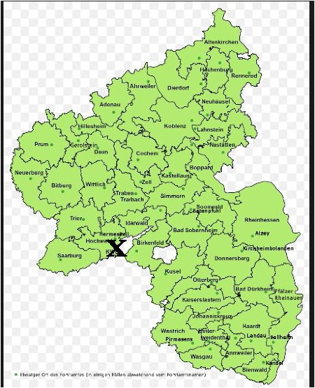
ein Teil meiner Arbeiten, die im Laufe der Jahre gefertigt habe
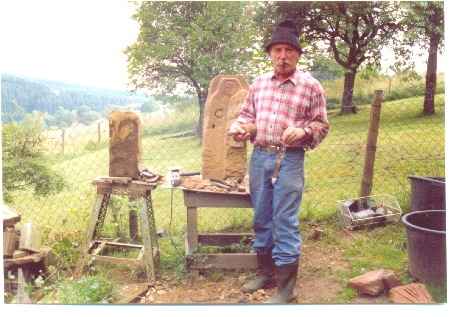
Bildstock, roter Eifelsandstein, vor dem Hause der Familie von Prof. Dr. Hermann Simon in Hasborn / Eifel
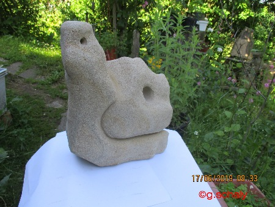
Nach der Arbeit
Tante Lena, Christian und Martin 1988
Edith Schaly aus Novo Hamburgo zu Besuch in Neuhhhütten 1996
Ida und Ernesto Hoffmann aus Blumenau SC Brasilien zu Besuch in Neuhütten 1993. Sie waren öfter bei uns. Ihr letzter Besuch war 2016
Arno Rui Schaly und Ehefrau Carolina Vieira Schaly aus Campos Novos SC Brasilien zu Besuch in Neuhütten Mai 2017
Mein erster Urlaub 1961. DGB Ferienlager in Salbach Hinterglemm auf der Hintermaisalm. Von Braunshausen wurde ich nach Saarbrücken HBF gebracht von meinem Vater mit einem großen Koffer. Wie wir da hin kamen weis ich nicht mehr. Jedenfalls wurden wir Kinder in einen Sonderzug nach Salzburg gebracht. Mit dem Bus nach Salbach. Ich kam aus dem Staunen nicht mehr heraus. Was es da überall zu sehen gab. Ich war noch nie von Braunshausen weiter weg als bis nach Dirmingen, wo eine Tante und ein Onkel wohnten. Heimweh hatten fast alle Kinder. Aber es war eine schöne Zeit.
Im Nachbarort waren Kinder aus der DDR, auch in einem Ferienlager...Sie durften nicht mit uns reden wenn wir uns im Ort trafen.. Das konnten wir Kinder damals nicht verstehen....G. Schaly 2020
1966 besuchten wir den Dom zu Speyer mit der Berufsschule Mayen
1967 machten wir einen Ausflug mit der Ars liturgica Maria Laach nach Aachen .
wir hatten ein Zelt zum schlafen, einen Gaskocher, Tisch und Stühle Was wollte man mehr. Sicher es war ein langer Weg nach Südfrankreich oder Spanien...Aber man war ja damals jung....
la Grau // Hyeres...le Valon de Solei 1982
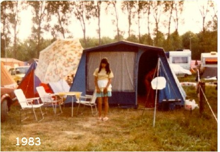
Familie
Amadeo Antonin Bosch aus Mollet del Valles Barcelona
1983
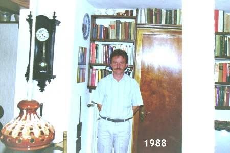
Ilha do Governador RJ 1989
Wasserfälle, ein einmaliges Erlebnis
Nova Petropolis RS
Busbahnhof in Blumenau SC
in Südfrankreich 1990
Weimar1990
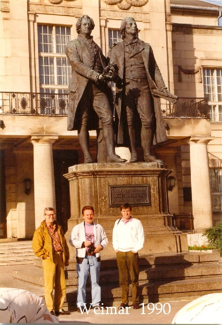
Rio de Janeiro 1992
Geburtstag in Rio de Janeiro 3.11.1992
Kreta 1992
Finnland
China Rundreise
1993
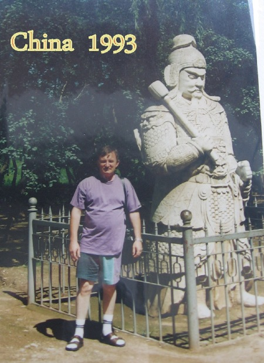
in Indien 1994
Türkei 1996
Cran Canaria 1997
Nepal 1998
in Nepal
in Nepal
die letzten Panzernashörner im Nationalpark Terei in Nepal
Nepal 2000
Brasilien 2000
Brasilien 2000
man muss es mal gesehen haben die Festung Schoenenbourg...2003
Deutsches Panzermuseum Munster 2005
Neuhütten 3.11. 2005
unsere Nachbarin Marita Rausch + Juni 2023
Bauernmarkt in Neuhütten
Koblenz Schängelmarkt 2005
eine wunderschöne Insel, zwar vom Hunsrück ein weiter Weg, aber sehr interessant und sehenswert. Ein schöner Strand entlang der Ostsee mit ihren alten Seebädern. In Pennemünde ist das Spielzeugmuseum und auch das U-Boot, sowie die Anlagen der Versuchsanstalten des 3 Reiches zu besichtigen. Das muss man mal gesehen haben. Auch lohnt sich ein Besuch in Polen.
Usedom 2007
Usedom 2007
Walsrohde
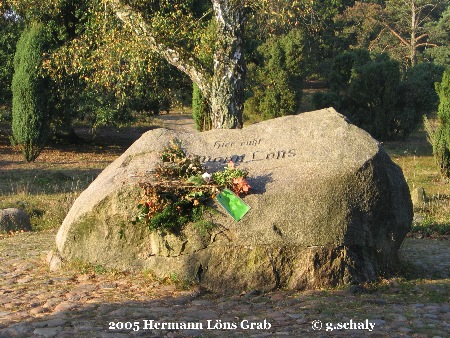
Müritz 2006
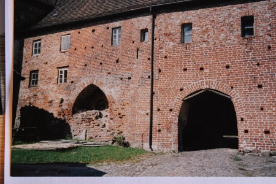
im Heckenland bei Monschau /Eifel
das muss man mal gesehen haben, diese riesigen Hecken, die die Höfe umschließen...was ist das für eine Arbeit diese Buchenhecken zu schneiden.
Monschau 2008...schöne Stadt und es gibt auch viel zu sehen..
CSD Köln 2009 das muss man mal gesehen haben....
2009 in Braunshausen
Goldene Kommunion 2009
Hachenburg / Westerwald, schöne Stadt, es gibt viel zu sehen.u.a.
Landwirtschaftsmuseum..
Besucherbergwerk Grube Bindeweide im Westerwald 2011
im Wald bei Bosen
Südtirol
2011
Heino in Bad Ems 29. 08. 2011
Koblenz 2.12. 2011
am Tag der Bombe in Wirges beim Fußball 4.12. 2011
mein Freund Alex Spomer, ein großer Sammler, leider ist er 2021 verstorben. Friede seiner Asche
Gilberto Eisenächer aus Salto SP und Frau.. Habe ihn 1989 kennen gelernt an den Wasserfällen in Foz do Iguacu.. Seine erste Frau Rita ist leider verstorben....
Wer hat ihn nicht gekannt den Willibald und den Siegfried von der Gärtnerei
Elsaß
Normandie
Jersey 2012
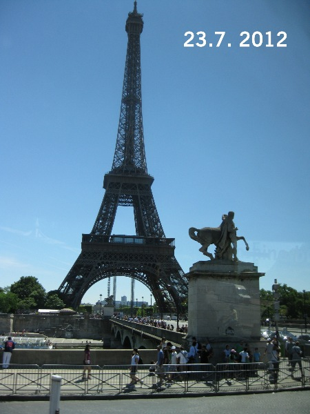
an der Lahn
Kobern - Gondorf 2012
Koblenz 14.9. 2012
Dresden 2012
Mallorca
Bremerhaven 2013
Wir gedenken unseren gefallenen und vermissten Verwandten
Koblenz 2013
viel Wasser im Rhein bei Neuendorf
in Hasborn / Eifel
Schloss Bürresheim bei Mayen 17.11. 2013
Prof. Dr. Hermann Simon zu Besuch in Neuhütten am Meiler. Festtage des Heimatvereins Neuhütten / Hunsrück
am Meiler...Gruppenfoto mit Sossongs Cilli und
Reiner Schmitt +und Engel Häns +
am Meiler 28. 7. 2013
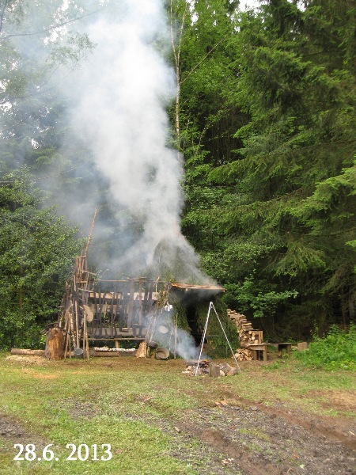
Cafe Heimat Morbach
Koblenz
Bundenbach Besucherbergerk
auf der Suche nach Fossilien im Hunsrück Schiefer
auf dem Saar Hunsrück Steig von Perl nach Weiskirchen
Lesewanderung zum Hunnenring mit Hans Peter Lorang 6.7. 2014
2016
Museumshütte 26. 11. 2016
Ostfriesland
Rügen 2013
an der Ostsee
viele Steine gefunden...kein Problem hatte den Hänger dabei...
Kreidemuseum Gummanz. selbst der weiteste Weg lohnt sich. Neuhütten nach Gummanz über 1000 km.
auf Rügen, im Landesinnern.....
Hier hat es mir sehr gut gefallen...es gibt viel zu sehen, abseits vom Strand.....eine Reise wert....
Feuersteinfelder bei Neu Mukran.......
Fußballfreunde SG Empor Sassnitz Rügen
im Nationalpark Jasmund auf Rügen 2013
Maria Laach 2013
an der Mosel in Neumagen - Drohn 2014
Bendorf / Rhein
Feuerwehrfest Niederwerth 2014
Mittellosheim
Friedensmuseum Brücke von Remagen 28. 08. 2014 man muss es mal gesehen haben...
Mayen 25. 10. 2014 auch hier hat sich vieles verändert. Ich besuchte hier die Berufsschule von 1965 bis 68
Nagelschmiede in Sitzerath 2014
Stöffel Park im Westerwald, ein Industrie Denkmal, Steinbruch und Fossilienlagerstätte. hier wurde die Stöffelmaus als Versteinerung gefunden. auch wurden Pflastersteine hier hergestellt.
schön gemacht mit Basaltsteinen..
im Steinbruch wird noch gearbeitet.
Ausstellung, alte Maschinen und Werkzeuge
Koblenz Bierbörse
Brasilien 2014
Flughafen in Navegantes SC
ein langer Flug von Frankfurt - Sáo Paulo- Navegantes SC
Brasilien 2014
auch hier hat sich viel verändert, war hier 1989, 1992 und 2014
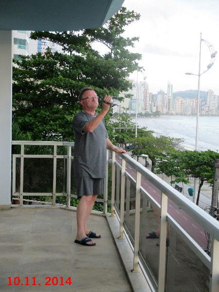
hier gibt es die Fahrscheine für den Bus. ( Bondolino ).Einstieg hinten
ITAJAI SC Casa Malburg
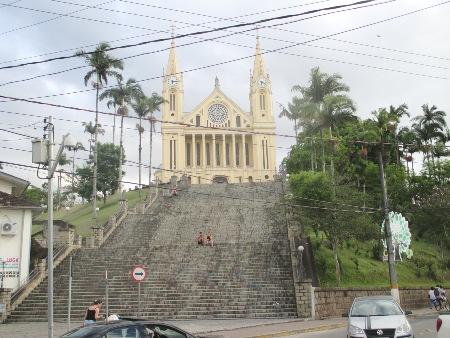
auf dem Weg nach Blumenau..
Campos Novos 2014
Schaly Bier Campos Novos SC Brasil
BRUNO Fest in Campos Novos 2014
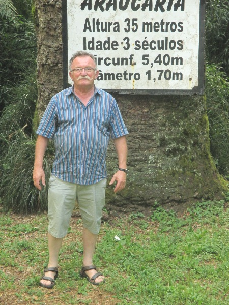
Gramado RS
Repreza do Cedro Municipio do Cedro SC
CAIPORA VIU Campos Novos SC 22.11. 2014
Heimatmuseum
Gramado RS
Gramado RS
Walachai Rio Grande do Sul Brasilien 2014
Friedhof Walachai, viele alte Steine von deutschen Einwanderern...eine Fundgrube für Familienforscher.....
Morro Reuter
Novo Hamburgo RS 24.11. 2014...Edith Schaly, letzte Ruhestätte
Flughafen Saó Paulo -Guarulhos
Rückflug Porto Alegre - Sáo Paulo - Frankfurt
Feuerwehrmuseum Hermeskeil
Neuhütten 2014
Winningen
Auf Fossiliensuche im Altmühltal Juli 2015
viele Platten gefunden und auch gespalten. Hatte der Kofferraum voll
Neuhütten / Spessart 2015
Firma Haas Dreisbach Westerwald
Keramikmuseum Höhr Grenzhausen 2015
Buddha Museum Traben Trabach 22.5. 2015
Ägypten September 2015
auf dem Nil
am Roten Meer 2015
auf dem Erbeskopf...2015
mit Prof. Dr. Hermann Simon auf dem Hunnenring 10.08. 2015
Koblenz 2015
oh wie lecker ist der Calpi….
meine Cousine Marlis
Andernach
Sulzheim
was macht man hier??
Man sucht nach Muscheln in den Weinbergen..Diese Muscheln sind Fossilien..viele gefunden im Muschelgraben..
Gehlweiler / Hunsrück (Schabbach) Drehort der Anderen Heimat
Juni 2016 Vilmar Lahn Marmor Museum....
Schloss Stolzenfels 2016
am Pulvermaar 2016
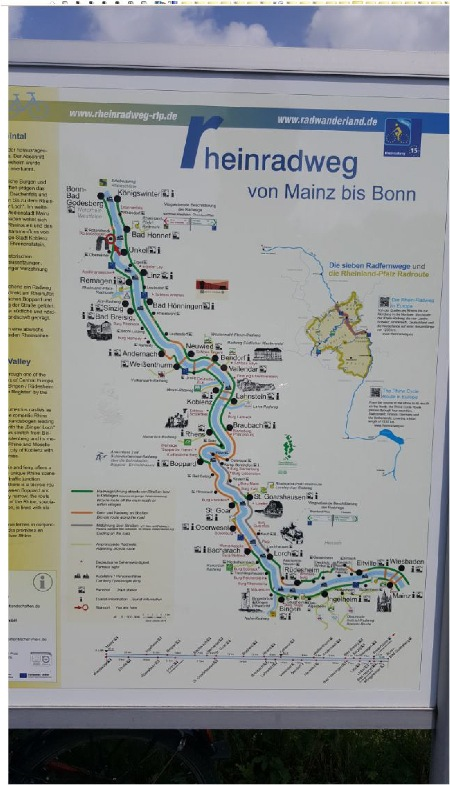
Koblenz Vorstadt
meine Nichte und Patenkind Yvonne wurde 40 Jahre alt.
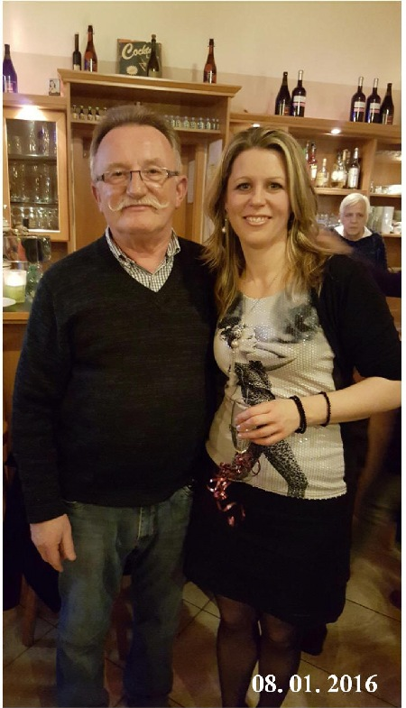
Vatertag 05.05. 2016 Wanderung Berus Tafeltour.......
Muhler Kirmes 2016
Stromberg bei Johann Lafer
Straßenhaus WW 2017
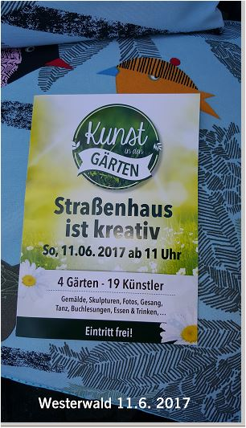
auf dem Moselradweg
28.08. 2016 in der Wacholder Heide bei Schalkenbach.. ich war 1966 hier. Die Mönche von Maria Laach hatten hier Pferde...
Gut Schirmau 2016
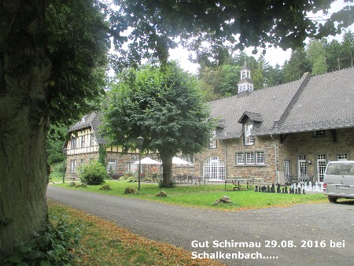
Mendig
Steinmetz Fest in Ettringen auf der Lay... da muss man mal gewesen sein...... aus Ettringen war Johann Degen ein Kriegskamerad von meinem Großvater Johann Schaly 1914- 18
30.08. 2016 Rudi Gutendorf wird 90 Jahre alt Feier auf dem Oberwerth....
Bildmitte
Christian Döring SWR 1
Marokko Rundreise Sept. 2016
Mayen 11.12. 2016
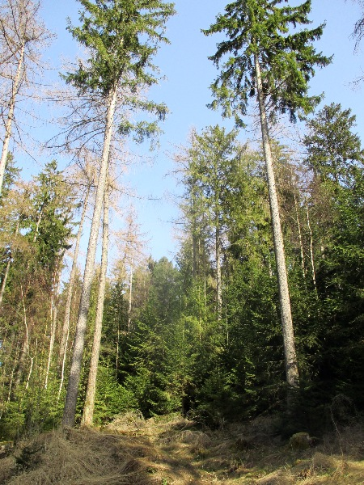
in Hans Peter Lorang,s Garten November 2016....links Hans Walter Ganz und Gernot Schaly..Wir trinken Mineralwasser....aus des Autors Keller
auf dem Saarradweg Mai 2017
Moyovre Grande..von hier kamen unsere Vorfahren Jean Chailly und Anne Orby 2017
Chailly- lés- Ennery / Moselle, Lorraine besucht Juli 2017
Fossilienmuseum Nettersheim / Eifel 2017
Höfener Heckenweg
Freilichtmuseum Kommern / Eifel
Grabstätte Kaiser Karl von Österreich ..Funchal / Madeira
unser Vetter Udo Schaly wird 50 Jahre alt..Braunshausen 2017
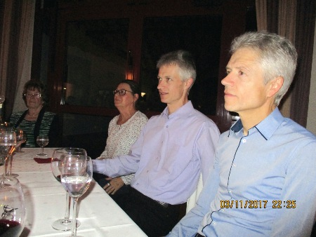
Neuhütten 4.11. 2017
Nichte Alexandra mit Sohn Henning
Koblenz Weihnachtsmarkt....2017 rechts Jens Hübschen mit Fan Gernot Schaly aus Neuhütten
Pipers Corner KO Vorstadt 14.11. 2017
9.1. 2018 ...rechts das Koblenzer Urgestein Manfred Gniffke
am Züscher Hammer...Arno Rui Schaly zu Besuch
...Gernot, Arno, Ganz Hans Walter u. Hans Peter Lorrang este ultimo escritor de romances policiiais. todos esto a reforma uma antiga e historica Forjaria Züscher Hammer na Villa Züsch 20.4. 2018
21.4.2018
auf dem Hunnenring...
Himmels Gääs Paad Noswendel, ein schöner Paad, gut zu gehen...
22.6. 2018 Grenzblickweg...
eine schöne Wanderstrecke...im Grenzgebiet zu Frankreich
in Leiding F, D, 22.6. 2018
in Maria Laach 2018 Bauhausaustellung
Friedhof Maria Laach... Grab von P. Theodor Bogler und Br. Maximin Scholl
Maria Laach, links die alte Schreinerei, daneben das ehemalige Lehrlingsheim..
Waldfriedhof Maria Laach Ruhestätte der Familie Biermann
Vorstädter Kirmes 2018
Tomatenfest in Moselweis 2018
Sardinien 2018
MONTELEONE ROCCA DORIA Brotmuseum auf Sardinien
Bahnhof Türkismühle
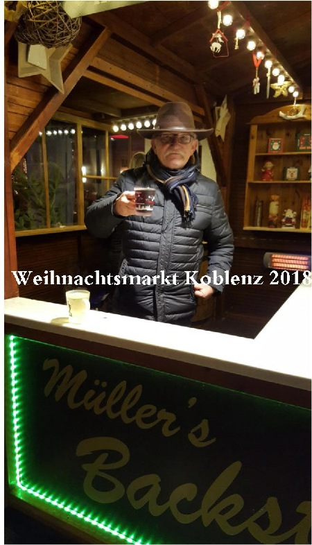
die Höckerlinie ( Westwall ) in Otzenhausen....man sollte doch ein kleines Stück dieser Betonklötze für die Nachwelt erhalten...
Bahnhof Rolandseck besucht April 2019
Fähre über den Rhein...
Freilichtmuseum Bad Sobernheim besucht Mai 2019
man muss mal dort gewesen sein....
Burgruine Sponheim besucht Mai 2019
Die Lavabombe von Strohn / Vulkaneifel 2019
zu Besuch in Bonn 12.7. 2019 bei Familie Hermann Simon
in Bad Ems
Besucherbergwerk Meurin 14.7. 2019 ein Besuch lohnt immer.
bei Mendig 2019
Wissembourg/ Elsaß
Wissembourg /Elsass
Koblenz Weihnachtsmarkt 2019
Lava Höhlen zwischen Ettringen und Bell Kreis Mayen
Kurzbesuch in Neuhütten Hermann Simon 28.12. 2019
Maria Laach März 2020
zu Besuch bei de Ewescht Simons in Hoasbat Juni 2020
im Bimsmuseum in Kaltenengers Sept. 2020
3.11. 2020 von Hans-Peter Lorang Autor
Radtour Juni 2021 im Mainzer Becken..Neu-Bamberg, Edersheim und und
Maare Rundweg bei Daun Juli 2021
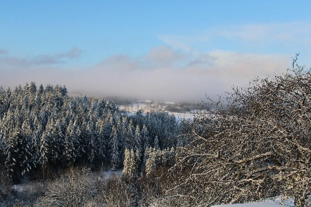
Koblenz Weihnachtsmarkt Dezember 2021
Sulzheim 25.3. 2022
Radtour Juni 2022, Buttenheim und Umland...Bayern
meine Tante und Patin Franziska Schaly
in Lourdes
Braunshausen 1999
Meine Patin und Tante Franziska
- 80. Geburtstag - 2005
12.06. 2015 meine Patin und Tante Franziska Schaly wird heute 90 Jahre alt...
Siska und Hamm Alois 1995
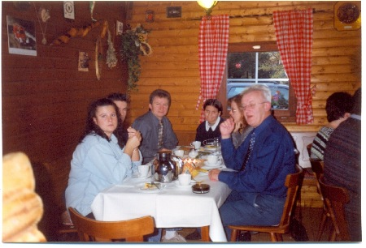
Neuhütten 7.11.2009
Tanja Schaly
v.
rechts Prof. Dr. Hans Peter Koch, G. Schaly, Dipl.-Ing. Gerd Krütten, Tanja Schaly... Neuhütten 14.09. 2013
von links Gernot Schaly, Hans-Michael Linnig +, Hans Werner Müller , Wilfried Großmann, Roland Mörsdorf, Braunshausen um 1964 es fehlt Elmar Mörsdorf +1985
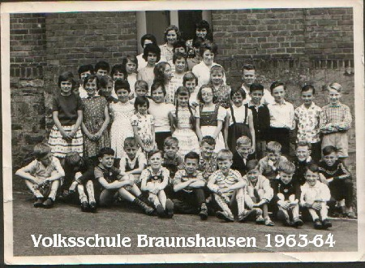
alte Schule in Braunshausen......
unser Schulkamerad Elmar Mörsdorf als Trommler beim Musikverein Braunshausen...leider mußte er früh von uns gehen......................
Bergmannsfest 1958, Schilderjunge Elmar Mörsdorf, Ehrenjungfrauen,v. links Melitta Schaly, rechts Christa Joseph, dahinter Toni, ( Anton) Mörsdorf... auf dem Felsi am alten Sportplatz....
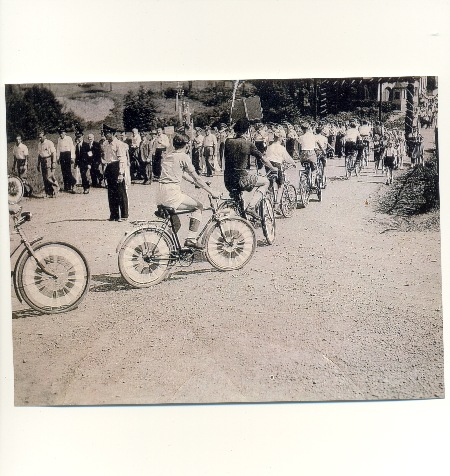
Hier nun unsere alte Schule... AK von 1958...habe sie vor vielen Jahren gekauft in Sachsen...geschrieben von Braunshausen am 30.9. 1958 nach Zwickau in Sachsen an Hernn Kurt Köhl. Das war, wenn ich mich recht erinnern kann der Großvater der Familie Zapf, die zu dieser Zeit im Hause Sanikollo ( später Klaus Rausch ) gewohnt haben........
BRAUNSHAUSEN ca 1938
Foto zur Ansichtskarte aus Nachlass von Buss und Kupfer Bad Kreuznach...v. links Kolz ( Bouillon ) Aneliese, Weiler ( Joseph, Ewerling ) Erna, auf Fahrrad Alex Weiler, gefallen, Ewes Greet,( Margarethe Straub, Mädchen des BDM, nicht alle bekannt, Kinder von Braunshausen ...
auch hier Foto zu Ansichtskarte aus Nachlass von Busse und Kupfer
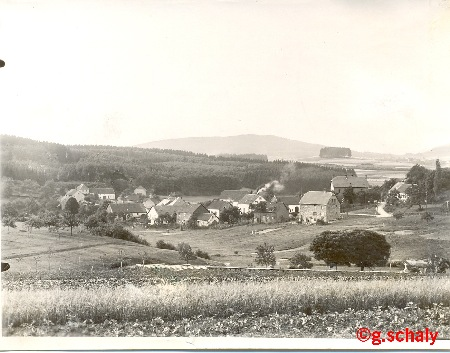
Ak aus Braunshausen info von Harald Peter
Maria Laach: Gernot Schaly u. die Volksschule Braunshausen
- 1967
so sieht es heute aus... 50 Jahre später...August 2018
Maria Laach: Georg Ahrens
(liegend
+ 2021) u. Gernot Schaly
(stehend) - 1965
Hans Gerhard und Alfons Biermann bei der Arbeit
Pater Theodor Bogler OSB mein Lehrherr +1968
mein Gesellenstück 1968
40 Jahre später bei Bildhauer Georg Ahrens in Weibern
leider ist Georg Ahrens 2021 verstorben
Maria Laach 2005 rechts Josef Wagner aus Wehr, links G. Schaly
Wer kennt ihn noch ? Alois Maul aus Oberwinter, heute wohnhaft Lappland / Schweden
Maria Laach 2008, v.links Hans-Gerhard Biermann, Otto Ley
zu Besuch bei Bildhauer Titus Reinarz in Löhndorf bei Sinzig er war damals auch Lehrling in der Bildhauerei 2014
bei Bildhauer Gerd Hardy Netzer Mühle Brohl Lützing 2003
Waldfriedhof Maria Laach
Wehrdienst in Koblenz Gneisenau K
aserne 2/ 142
Koblenz Busbahnhof am Hauptbahnhof 1971
RESERVE HAT RUH
FFW. Feuerwehr Braunshausen
- 1975
Der Stein wurde von mir aus einer alten Treppenstufe gearbeitet, die vor dem Eingang von Haus Schamba ( Familie Leonard Weiler )abgerissen wurde 1974.
von links, meine Schwester Marita, meine Mutter, Tante Lena, Cousiene Gisela aus Dirmingen und ich.
am Geländer steht Erika Göbel, Mutter von Hans Uwe... beide verstorben
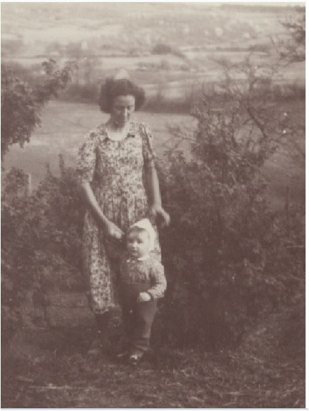
Braunshausen um 19 60 / 61 von links,oben... Hans Uwe Göbel, Erika Mörsdorf, Walburga Hares, Gernot Schaly, Wolfgang Schuler, Gottfried Hares und Wolfgang Hares.....
Vetter Joachim Schaly
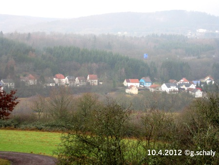
Kastelerstrasse 7
hier stand unser Haus... Schleid 13, später Kastelerstr. 7
Die Autobahn wird gebaut und das Sportplatz verschwindet... zu sehen noch das Tor in Richtung Erzkaul nach 1971 Foto: Leo Weiler Braunsh.
mein Auto NSU Prinz 1200, gekauft bei der Firmar Gläser in Primstal hat damals 1969-70 5500 DM gekostet
hier kommt der Welker Alfons mit Hund +
et Schaly Cilli
Das telefonieren in Braunshausen vor 60 Jahren.
Es gab im Unterdorf nur das Telefon bei der Post und bei Bürgermeister Peter Linnig. Wer den Arzt oder Tierarzt anrufen wollte musste da hin...Die Einheiten wurden aufgeschrieben und man musste bezahlen. Damals noch in Frs. Mittags musste man zu Hause sein wenn die Essensträger gingen zur Firma Weiler oder Nachmittags wenn die Firma Weiler Feierabend hatte. Ich kann mich noch an Thekla Drocur, Maria Müller und Erna München erinnern wie sie täglich an der Schleid vorbei gingen zum Weiler um Ihren Männern das Mittagsessen zu tragen. Die Frau Weiler war zu uns Kindern immer gut. Wir durften im Abfall nach Briefmarken suchen die damals noch auf einem großen Haufen hinter dem Sägewerk lagen . Briefumschläge, Holz, Papier, alles brennbare wurde verfeuert. Auch erinnern kann ich mich noch an die beiden aus Italien erinnern. Michel Pelaia und sein Bruder Josef die auch täglich bei uns vorbei gingen. Sie waren aus Cardinale in Kalabrien.Die Kinder waren Josef, Natalina Rosalla und Gerado. Ihre Mutter hatte immer, sie ging oft in die Kirche, ein großes Tuch über den Kopf. Ich war Messdiener von 1959 bis 1964... Das Buch mit den Eintragungen habe ich vor über 30 Jahren in Frankfurt Sachsenhausen auf einem Flohmarkt erstanden. Dank meiner Sammelleidenschaft ist es bis heute erhalten geblieben.
Habe das Telefonbuch abgegeben, an Stiftung Backes Haus in Braunshausen...
Die Saarbrücker Zeitung hat 1955... 325 Frs. gekostet..hier die Bezugsgeld Quittung meines Großvaters Johann Schaly. Es gab Alben in die man die Quittungen kleben konnte....hier Vorder und Rückseite...
Messdiener von links Hans Uwe Göbel + , Alfons Kronenberger + , Gernot Schaly .. 1960
Die Messdiener sammelten am Ostermontag Ostereier. Im Unterdorf bekamen wir die meisten Eier vom Gäse Leni..( Witwe Helene Hares letztes Haus am Felsi.(links , gegenüber vom Hiewel Len. Sie hatte viele Ziegen und stammte aus Merkeshausen in der Eifel. Ihr Mann ist am 20.4. 45 gefallen. Sie war die Schwiegermutter vom lange Walter und vom Hageburg Wolfgang...
Glockenweihe in Braunshausen 1961
Bruder Odilo ist 1995 verstorben, letzte Ruhestätte Konventfriedhof Johanneskloster Niederlahnstein..
v. links Heinz Wagner + Oktober 2020 ,Bruder Odilo Wigge, Roland Mörsdorf, Gernot Schaly, dahinter Hans Peter Wagner..Bruder Odilo war die Haushaltshilfe von Pater Berthold Becker in der Pfarrei Braunshausen..um 1964 beendete er seine Tätigkeit in Braunshausen und ging ins Johannes Kloster nach Niederlahnstein. Dort hatte ich ihn und auch in Wuppertal,Oberbarmen seiner Heimatstadt besucht um 1965-66 ( Foto Hans Peter Wagner)
mein Elternhaus vom Weiler aus gesehen. ca 1956...7
zum Gedenken an Nikolaus Maus aus Kreuzweiler
....,nichts haben ist besser als Steine graben. Reden ist Silber, Schweigen ist Gold, das und mehr waren seine Sprüche, die man als Kinder gehört und bis heute nicht vergessen hat.
Hans Uwe Göbel
- Mein Freund um 1953 -54
Hans Uwe mit Vater Hans Göbel + 1949
ein Brief von Hans Uwe aus der Ferne
links et Schneidbanks Johanna , dahinter et Sersch Erika....zwei gute Freundinnen...
Anna Göbel geb. Mörsdorf...Hunnes Ännchen
Johann Göbel Göbel Hännesi + um 1965
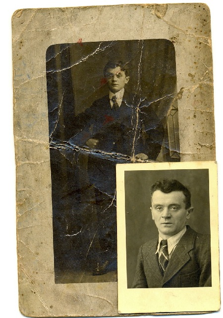
Friedhof Münchwies/ Saar
HANS - UWE GÖBEL ist am 10.04. 2012 verstorben.. Friede seiner
A
sche
besucht heute in Münchwies am 10.12. 2022
Auf dem Rhein bei Koblenz
- 1959
die Kinder von links, Gernot Schaly, Alfred Rausch, Roland Mörsdorf, Hans Jürgen Hares Ausflug nach Koblenz an den Rhein um 1959,60.Busfahrer Otto Hoffmann aus Altenglan
Bei meinem Großvater Thomas Malburg und Tante Maria auf dem Wagen
- Neuhütten 1953
40 Jahre Mitglied im Heimatverein Neuhütten...28.4. 2018
© 2009-2011 Gernot Schaly
|


 1963 oder auch 1964 wurde ich ins DGB Jugendheim Pappelhof bei Rieseberg ins Ferienlager verschickt. Wir besuchten die Zonengrenze ,Königslutter am Elm und vieles mehr.
1963 oder auch 1964 wurde ich ins DGB Jugendheim Pappelhof bei Rieseberg ins Ferienlager verschickt. Wir besuchten die Zonengrenze ,Königslutter am Elm und vieles mehr.